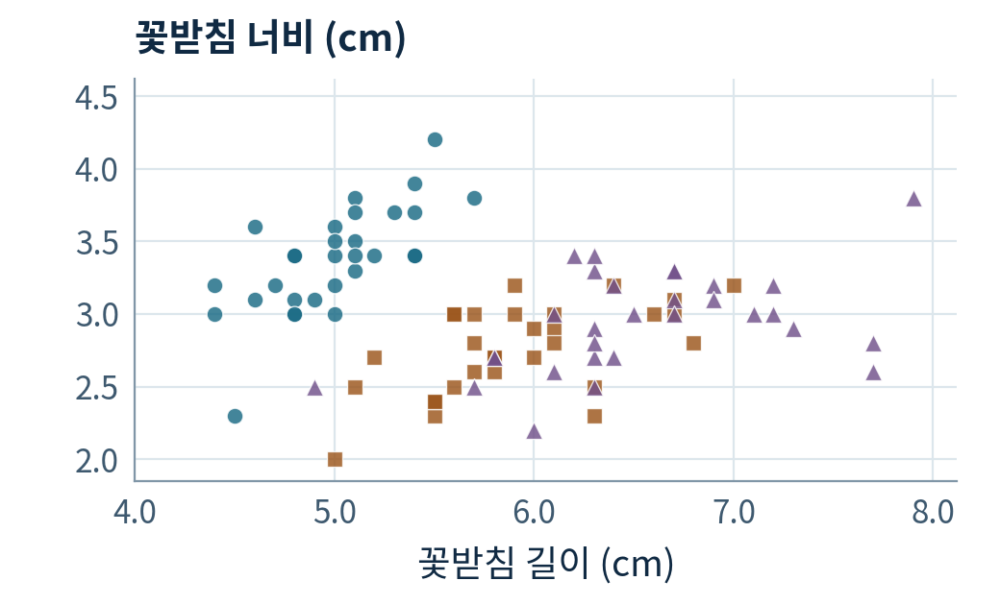

인공지능 AI
추론, 탐색, 인식, 학습 등 지능적 기능을 컴퓨터로 구현하는 분야입니다.
예시 지식과 규칙을 바탕으로 설비 고장 원인 후보를 추론하는 전문가 시스템
인공지능, 머신러닝, 딥러닝의 관계와 대표적인 학습 방식을 살펴보고, 공개 붓꽃 데이터로 지도학습 분류 문제를 준비합니다.
머신러닝은 인공지능의 한 분야이며, 딥러닝은 여러 층의 인공신경망을 사용하는 머신러닝 기법입니다.
추론, 탐색, 인식, 학습 등 지능적 기능을 컴퓨터로 구현하는 분야입니다.
예시 지식과 규칙을 바탕으로 설비 고장 원인 후보를 추론하는 전문가 시스템
데이터의 패턴을 학습해 새 입력을 분류하거나 결과를 예측하는 모델을 만듭니다.
예시 의사결정나무로 꽃의 측정값에서 종을 분류
여러 층의 인공신경망으로 입력을 단계적으로 변환하며 작업에 필요한 표현을 학습합니다.
예시 신경망이 사진에서 물체의 형태를 학습해 종류를 구분
입력과 정답 라벨
입력과 정답의 관계를 학습해 새 입력의 범주를 분류하거나 수치를 예측합니다.
예시 붓꽃 종 분류 또는 부품의 수명 예측
라벨이 없는 관측값
관측값에서 비슷한 집단이나 주요 구조를 찾습니다. 군집화와 차원 축소가 대표적입니다.
예시 이용 패턴이 비슷한 고객을 묶고 각 집단의 특징을 해석
환경과의 상호작용에서 얻는 보상
에이전트가 상태를 관측하고 행동을 선택합니다. 장기적인 누적 보상을 높이도록 행동 정책을 학습합니다.
예시 로봇이 이동 행동을 시도하며 목표 지점에 도달하는 정책을 학습
꽃받침과 꽃잎의 길이·너비를 입력해 붓꽃의 종을 분류하는 실습입니다. 공개 원자료는 150행이며, 세 종이 각각 50행이고 결측값은 없습니다.
species 열의 붓꽃 종sample_id로 행을 식별하고, split으로 훈련·검증·시험을 구분| ID | 꽃받침 (cm) | 꽃잎 (cm) | 종 | ||
|---|---|---|---|---|---|
| 길이 | 너비 | 길이 | 너비 | ||
| 1 | 5.1 | 3.5 | 1.4 | 0.2 | setosa |
| 51 | 7.0 | 3.2 | 4.7 | 1.4 | versicolor |
| 101 | 6.3 | 3.3 | 6.0 | 2.5 | virginica |
종별로 훈련 30행, 검증 10행, 시험 10행을 배정했습니다. 네 측정값이 같은 행은 동일한 분할에 배치했습니다.
모델 학습과 전처리 기준 산정에는 훈련, 모델 설정 선택에는 검증, 확정 모델의 최종 평가에는 시험 데이터를 사용합니다.
데이터 준비 시 확인할 항목 예측 목표, 라벨 판정 기준, 측정 단위, 결측·중복 여부, 출처와 사용 권한을 기록합니다.
데이터 출처는 R. A. Fisher(1936)의 Iris, UCI Machine Learning Repository입니다. CC BY 4.0에 따라 bezdekIris.data의 수치를 유지하면서 열 이름, 행 ID, 분할 정보를 추가하고 종 라벨을 setosa 등의 형태로 줄였습니다.
훈련 데이터 90행을 사용했습니다. 한 점은 붓꽃 한 개체의 길이와 너비를 나타내며, 측정값이 같으면 점이 겹칩니다.

